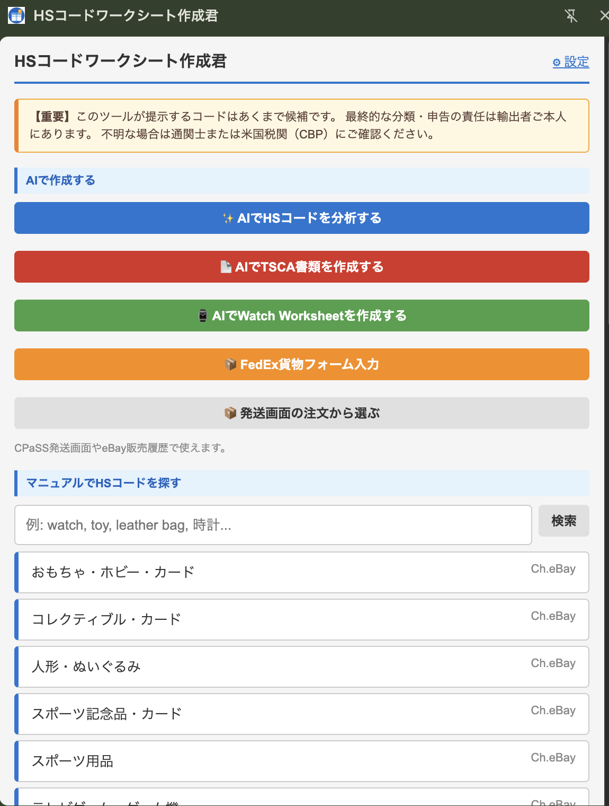
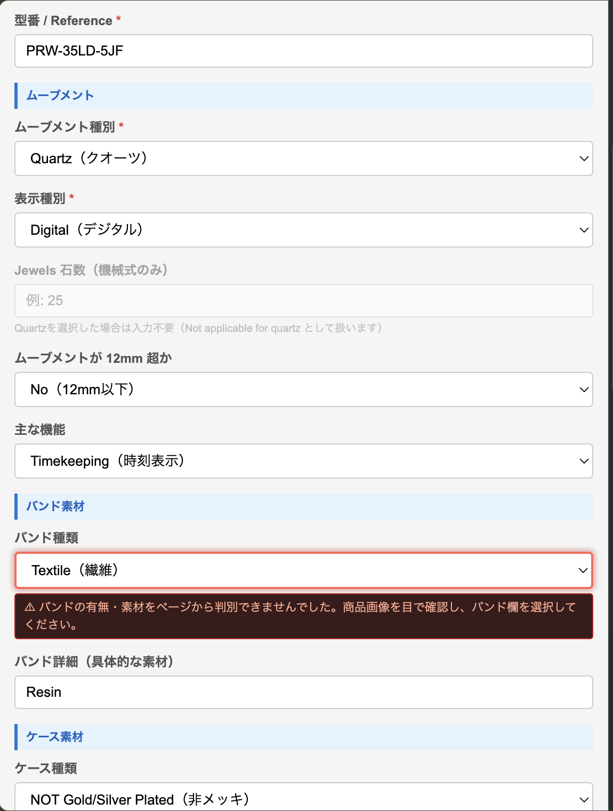
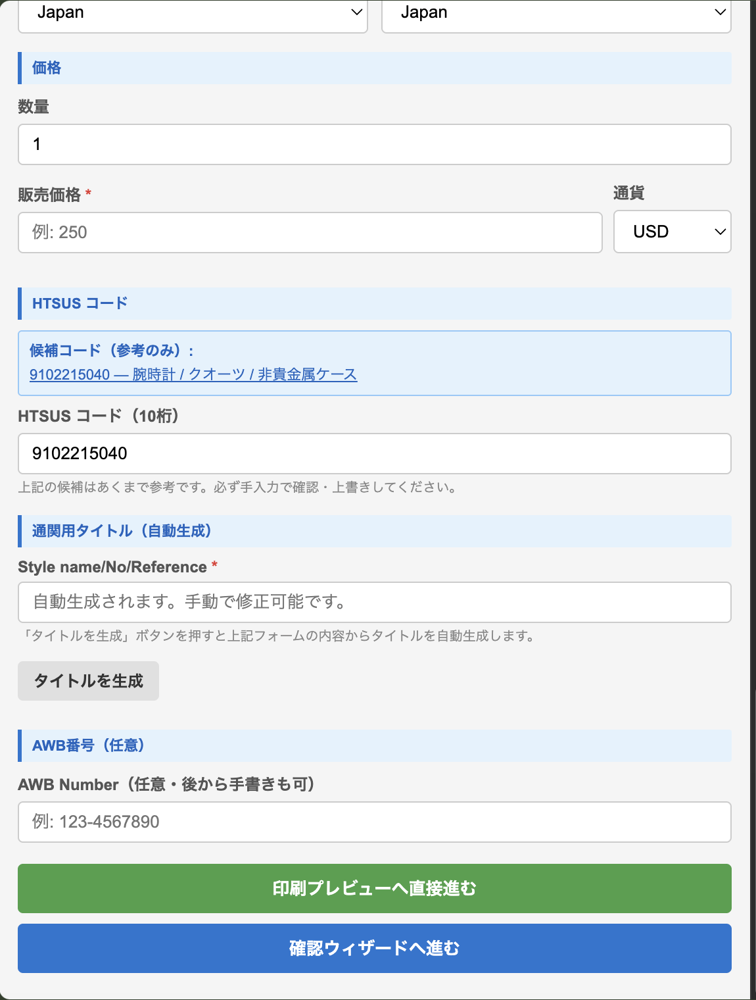

商品ページを開いて、緑のボタンをおす
eBayの商品ページを開いた状態で、Chromeの右上から作成君を開きます。
ホーム画面の次の緑のボタンをおします。
米国向け発送の Watch Worksheet（腕時計の税関用シート）を、Chrome拡張「HSコードワークシート作成君」で作る方法です。
自分のAIに作らせると、止まりがちです。
ChatGPTなどに Watch Worksheet を作らせると、石数（Jewels）がわからないときに「推定」「未検証」「暫定」といった注意書きを入れてきて、作業が止まりがちです。
税関に出す書類には、こうした言葉は入れない方が安全です。
作成君なら迷わず作れます。
項目が自動で入り、わからない欄の入れ方も決まっています。
次のページを開きます。
一覧の中から「HSコードワークシート作成君」を探して、次のボタンをおします。
eBayの商品ページを開いた状態で、Chromeの右上から作成君を開きます。
ホーム画面の次の緑のボタンをおします。

型番、ムーブメント種別（時計を動かす仕組み）、表示種別、石数、バンド、ケースなどの欄に、内容が自動で入ります。
入った内容は、各欄でその場で選び直したり、書き直したりできます。
赤い警告が出た欄は、商品画像を見て自分で選びます。
上の例では、バンドの素材がページから判別できなかったため、バンド種類の欄に赤い警告が出ています。
この例はクオーツの時計なので、「Jewels 石数」の欄は薄い表示になっていて、入力は不要です。

「価格」のところにある「販売価格」の欄に入れます。通貨は、必要なら横の欄で選びます。
その下の「HTSUS コード（10桁）」の欄には、コードが自動で入ります。空のときは、すぐ上の「候補コード」を見て10桁の数字で入れます（下の「HSコードは自動で決まります」の表と同じ番号です）。

次のボタンをおします。
「通関用タイトル（自動生成）」の「Style name/No/Reference」の欄に、タイトルが入ります。手で直すこともできます。
「AWB Number（任意・後から手書きも可）」の欄に入れます。わからなければ、空のままでもかまいません。
画面の一番下に、2つのボタンがあります。どちらをおしても大丈夫です。
このまま、PDFを作る画面まで進みます。確認の小さな窓が出たら「OK」をおします。このボタンは、AIで読み取ったときだけ出ます。
各値を確認してから進めたいときは、こちらをおします。
この機能は、ご自身の OpenAI APIキーが必要です。作成君の「⚙ 設定」を開き、「APIキー」の欄に入れて「保存」をおします。
ホーム画面を下へ動かすと、次のリンクがあります。
上にある2つのタブのうち、次のほうをおします。
AIで作るときと同じ入力欄が出ます。自分で入れていけば、同じように作れます。
入れ終わったあとは、2章の手順3〜5と同じ欄を入れて、「確認ウィザードへ進む」をおします。手で作るときは、緑の「印刷プレビューへ直接進む」ボタンは出ません。
2章の手順6で「確認ウィザードへ進む」をおした場合は、ここから進みます。「印刷プレビューへ直接進む」をおした場合は、次の「印刷 / PDF にする」へ進んでください。
「確認ウィザード（Watch Worksheet）」（内容を順番に確かめる画面）の画面が開きます。ブロックごとに内容が並んでいます（全部で7つ）。見直して、直すところがあれば直し、次のボタンで進みます。
最後のブロックまで来たら、次のボタンをおします。
「ワークシート確認（Watch Worksheet）」の画面が開きます。「印刷プレビューへ直接進む」をおした場合も、この画面になります。内容を見たら、次のボタンをおします。
別のウィンドウが開きます。ブラウザの印刷の画面で「背景のグラフィック」をオンにすると、背景の色が正しく印刷されます。
同じ画面の「＋ 時計を追加（最大5本）」で、時計を最大5本まで1枚にまとめられます。やり直したいときは「最初からやり直す」をおします。
HSコードは、税関で品物の種類をあらわす番号です。作成君は、次の3つの中から決めます。石の数ではコードは変わりません。
| 時計のタイプ | HSコード |
|---|---|
| 電池式（クオーツ・ソーラー） ケースが貴金属でない | 9102.21.5040 |
| 機械式（自動巻き・手巻き） ケースが貴金属でない | 9102.21.7010 |
| 機械式 ケースが貴金属 | 9102.11.9500 |
入力不要です。
作成君が「Not applicable for quartz」として扱います。
空欄にしないでください。次の順に探します。
AIが「確定できない」と言っても、止まらなくて大丈夫です。この内容で進めてください。